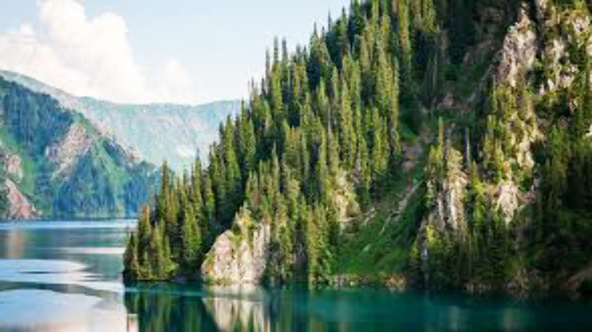

Сары́-Челе́кский государственный биосферный заповедник — это особо охраняемая природная территория Киргизии, которая располагается на Чаткальском и Ат-Ойнокском хребтах в Джалал-Абадской области. В 1979 году заповедник был включен в международную сеть биосферных заповедников ЮНЕСКО.
При образовании площадь заповедника составляла 20 810 гектар. Впоследствии, после присоединения Афлатунского лесхоза, площадь заповедника увеличилась до 23 868 гектар. После уточнения площади с помощью цифровых методов окончательно она принята как 23 832,8 гектар, включая 9076,9 га лесных насаждений, 2001,1 га редин, 435,5 га прогалин и пустырей, 7639,1 га пастбищ, 2 га дендропарк, 64.1 га садов и виноградников, 93,6 га усадеб, 2,1 га болот, 576,2 га вод, 118 га ледников, 3825,8 га — прочее.
С севера, востока и запада заповедник ограничен Чаткальским хребтом и его отрогами, а на юге примыкает к Ферганской долине. Эта территория входит в Джаны-Джольский район Ошской области Кыргызской Республики. центральная усадьба заповедника находится в поселке Аркит, в 60 км от районного центра - село Караван и в 130 км от ближайшей железнодорожной станции Наманган.
